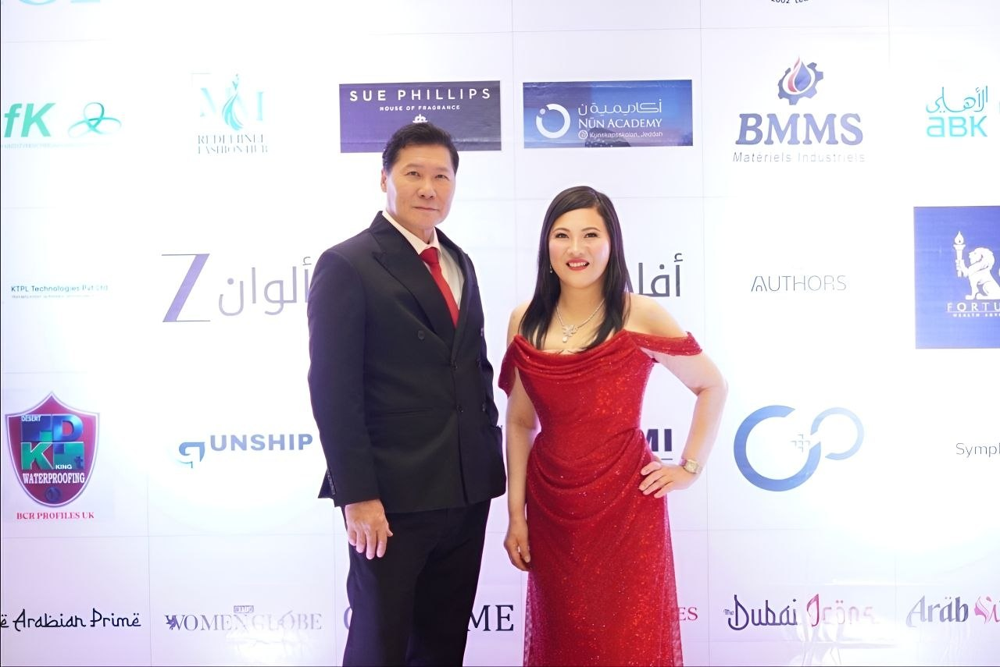
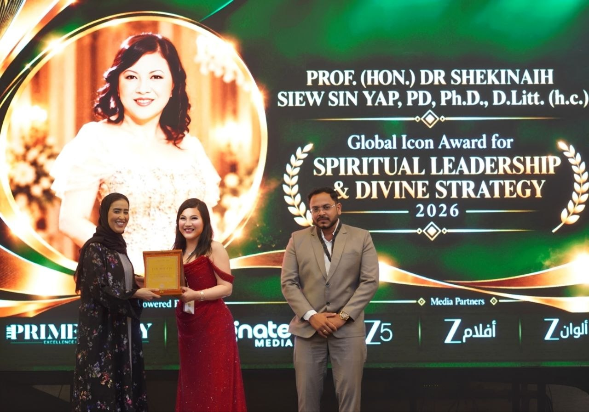
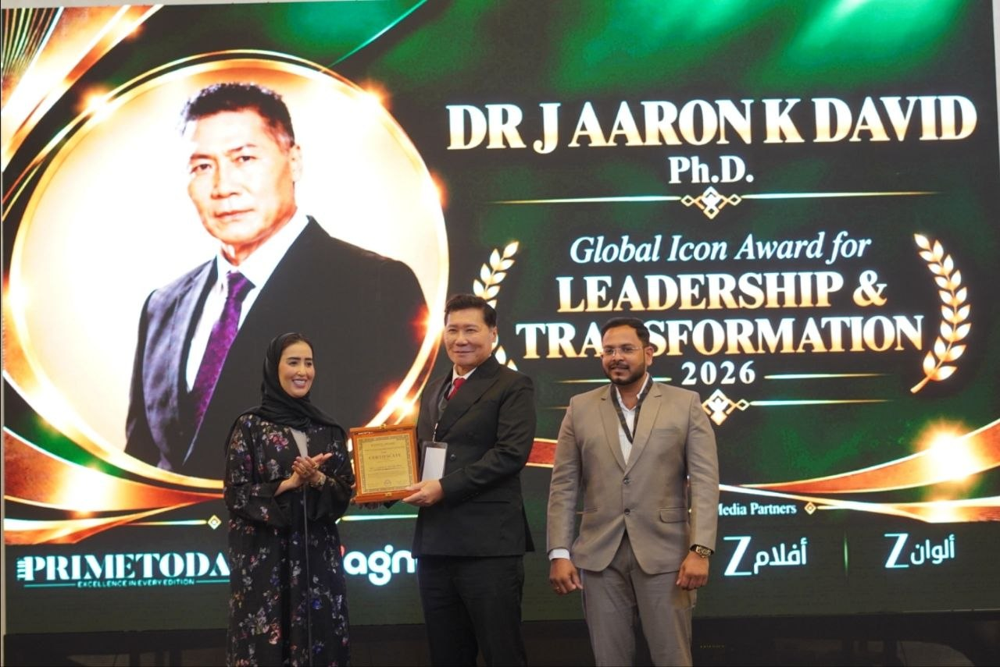
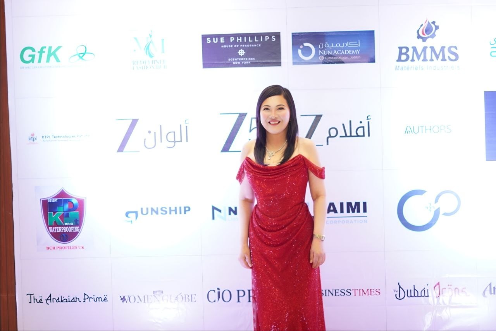
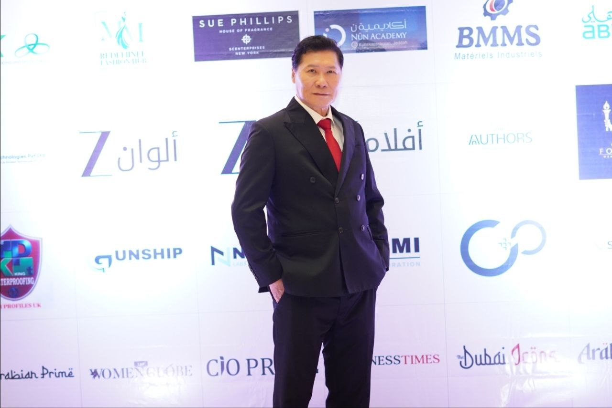

Dubai · 10 October 2026 · Global Icons & Leadership Excellence Awards
Two Global Icon Awards in Dubai
SHEKINAIH SIEW SIN YAP received the Global Icon Award for Spiritual Leadership & Divine Strategy, and J AARON K DAVID the Global Icon Award for Leadership & Transformation, in Dubai on 10 October 2026. Both spoke on the leadership panel, and she gave a keynote address.

The panel discussion
When All Else Fails
The six panellists were SHEKINAIH SIEW SIN YAP, J AARON K DAVID, Areosa Makboul, Chancelvie Motopenza, Siog Moore and Dr. Navil Prasad Edathil. Asked how her ministry helps people who see no way forward, SHEKINAIH SIEW SIN YAP introduced herself as from Heaven Throne Room Ministry and gave the line she says the God of the Universe gave her: “When all else fails, try the God of the Universe in SHEKINAIH SIEW SIN YAP.” She traced her calling to years of social service from the age of thirty and told the story of a 43-year-old entrepreneur who, she said, recovered from losing four million in a year after six months of her training.
J AARON K DAVID told how, at forty, while running a real-estate agency and a renovation company, he heard a voice ask him, “Are you happy?” He sold his businesses, spent ten years being tested, and then met SHEKINAIH SIEW SIN YAP: “She is a seer, I am an interpreter of vision and dreams.” He closed with the date itself: “October the 10th, 2026 … So you have a triple 10,” a number, he said, that means increase.
Read transcript · The panel (51:56)
Checked against the recording with several transcription passes. Words that could not be confirmed are marked [unclear]. Speakers are labelled as the host introduces them. SHEKINAIH SIEW SIN YAP answers from 09:51, J AARON K DAVID from 19:18.
Host00:00 Ladies and gentlemen, please all be seated, we'll begin very shortly. I'd like to extend a warm welcome to you all. Thank you for gracing us with your presence at the Global Icons of Excellence 2026 ICONEX Awards. Today, we will be presenting leaders of business with a prestigious ICONEX Award that celebrates vision, leadership, achievement, and excellence in their designated fields.
00:32 My name is [unclear] Day, and I'm honored to be your host and moderator throughout this event and award ceremony. Today is not just about awards, it's about celebrating the journeys behind those achievements, the visionaries who dare to think differently. It's about the leaders who turn challenges into opportunities, and the individuals and organisations that created a meaningful impact in their industries and communities. The Global Icons of Excellence 2026 ICONEX Award is proudly organized by The Prime Today Media and Magnate Media, bringing together exceptional leaders, entrepreneurs, innovators, and changemakers at one prestigious platform.
01:20 Prime Today Media is a leading print and digital media platform that brings forward expert voices, industry insights, inspiring stories, and the achievement of influential business leaders. Its vision is to create a trusted platform that connects audiences with the people and their ideas that shape the future. Magnate Media is a full-service media and public relations company, helping businesses strengthen their brands through strategic PR, media communications, digital solutions, creative services, and social media.
01:56 Its focus is on helping brands build credibility, amplify their voice, and achieve sustainable growth. Together, these platforms have created the concept of our event with the one powerful purpose to recognize excellence, celebrate leadership, and inspire the future. So with great pride and excitement, let us begin this remarkable day, Global Icons of Excellence 2026 ICONEX Awards. Once again, I'd like to give a warm welcome to all of you, but I'd like to give a warm welcome to our chief guest, Ms.
02:36 Bushra Isabel, a UAE-based healthcare operations and clinical management professional. Bushra Isabel currently serves as clinic manager at [unclear] Clinic Group. She has previously served as operations manager at New Hope Hospital and patient relations manager at [unclear] IVF and Day Surgery Centre. Her experience across healthcare operations, patient care, clinical administration, she brings a strong healthcare leadership perspective to today's event. Let's please give her a warm welcome.
03:16 Today, we will be starting a very informative panel discussion where we have five industry leaders who will answer a question pertaining to their industry and knowledge around it. I would first like to introduce Dr. SHEKINAIH SIEW SIN YAP. Dr. SHEKINAIH SIEW SIN YAP is a divinely appointed prophetic messenger and a spiritual leader, serving as a messenger, a mouthpiece, judge and executor of divine decrees.
03:54 As founder and supreme overseer of Crowned Eagles Global, SHEKINAIH SIEW SIN YAP focuses on revealing biblical mysteries and sharing teachings on healing, restoration, and divine justice. Through words including Behold My Messenger, she seeks to guide believers towards spiritual understanding, divine alignment, and that God giveth destiny. I want to tell you a bit about her background, her qualifications. It's actually quite interesting and remarkable. She's a Doctor of Philosophy, PhD in Leadership, Entrepreneurship, Applied Counseling and Divine Counsel, European International University, EIU Paris, International American University, IAU, Professional Doctorate in Leadership, Entrepreneurship, Applied Counseling and Divine Counsel, European International University, EIU Paris, and Doctor of Letters, D.Litt., Honoris Causa in Divinity and Spirituality, European International University, EIU Paris.
04:56 That's really remarkable. Now, our next panelist, Dr. J AARON K DAVID. He holds a doctoral qualification in Theology and Divine Understanding from European International University, EIU Paris, and International American University, AIU, together with a professional doctorate in Theology, Divine Understanding from European International University. His work focuses on theology, divine understanding, spiritual transformation, and the exploration of the way of the Creator of the Universe.
05:35 Areosa Makboul, she is a healthcare and hospitality professional based in the UAE. With more than a decade of experience across Europe and the MENA region, her work spans health tech operations, strategy, digitalization and AI, with a strong focus on wellness, leadership and human performance. Combining strategic thinking with operational excellence and human-centered leadership, she supports organizations and teams navigating transformation and building sustainable growth. Let's give her a warm welcome, please.
06:26 Siog Moore is an experienced educational professional, entrepreneur and founding partner with more than three decades of experience in childhood education. As owner and founding partner of Little Land Nursery and Montessori Centre in Dubai, she focuses on creating nurturing, child-centred learning environments. She's also the co-owner of TeachWise Vocational Institute, supporting aspiring educators through Montessori and early years training, while bringing expertise in educational leadership, coaching, curriculum development, and team building.
07:03 Dr. Navil Prasad Edathil is a healthcare and medtech leader with close to three decades of experience across medical technology, healthcare, manufacturing, and operations. He serves as Executive Director and CEO of KTPL Technologies, where his work spans business strategy, operation, and healthcare technology. With a background in biomedical engineering and advanced management education, he has focused on advancing technology-driven healthcare solutions and strengthening the medtech ecosystem in India and globally.
07:41 Let's give him a warm welcome. And Chancelvie Motopenza is a seasoned chief financial officer and strategic business partner with more than 18 years of experience in financial strategy, performance management, business planning, FP&A, audit and risk management. He works closely with executive leadership to align financial strategy with operational priorities and support sustainable business growth and profitability. His expertise also includes Lean Six Sigma, financial control and internal processes, complemented by experience as a lecturer and instructor in financial management.
08:25 So, there we have it. Now, we'd like to ask you all a few questions. Do we have the mics for our panel? Yes, thank you very much.
09:22 So, Dr. SHEKINAIH SIEW SIN YAP, once again, your Heaven Throne Room Ministry carried a distinctive mandate to solve all unsolved problems through divine counsel. When people have exhausted their own wisdom, sought advice from others, and reached a point where they see no way forward, how does your ministry help them seek Heaven's solutions? And how can someone who's facing such a problem come to you for counsel?
SHEKINAIH SIEW SIN YAP09:51 Hi everyone, I'm Dr. SHEKINAIH SIEW SIN YAP from Singapore. I'm from Heaven Throne Room Ministry. And I communicate with the God of the Universe, which is, you can say, the God of Adam, the God of Moses, the God of Noah, the God of the Old Testament, and the God, the Creator of the Universe. So for 30 years, I've been molded actually to be selfless, to assume this role as a spokesman.
10:23 And they have written five Behold My Messenger books about, which actually is a divine writing that talks about how a person can progress into a higher world in Heaven, and how you can actually do the miracles like the days of old with all the great prophets, and also at the same time, what the whole world is heading now towards the, you can say, the last times, or you can say the apocalypse or doomsday, where I received revelation that the earth actually had less than 40 years left before they were hit by 50 comets from 360 degrees.
11:07 So you basically, the earth will be another Mars, where there will be nobody able to inhabit. So my role actually is to empty hell and open Heaven. I've been sent and I've been trained, I've been molded to be a walk-in for the God of the Universe, to ready and teach how to redeem humanity from their fallen state. And they teach me how the every creation are being created according to the law of the universe, according to the image of the Creator, according to the word that He, God Himself, has been formed.
11:41 So they teach me the 50 laws of the universe that correspond to our 50 acupuncture points. So what happens when somebody comes to me with a problem, the God will be able to stand in front of me and tell me the root cause of every problem, which is a spiritual good. And I'll teach them how to undo that spiritual good and replace it with the law of the universe, which is the light, the healing light that will burst out in your body, whether you are financial, you are family problem, whether you have physical problem, your health problem, or any issue in your life, there is some blockage. So I'm able to detect exactly what's wrong and how to progress forward.
Host12:19 Doctor, that was a wonderful answer. Thank you so much. Thank you. Do you find people have hit a brick wall when they come to you? So they've tried alternative things, alternative therapies, and then they come to you, and then that's, I want to go a little bit elaborating on that question. They've tried everything, they've hit a place where they feel they can't seek any more answers, and then they come to you.
SHEKINAIH SIEW SIN YAP12:43 Correct. So, okay, the God of the Universe told me, my brand is, when all else fails, try the God of the Universe in SHEKINAIH SIEW SIN YAP. It works because it's backed by the, fully backed by the power of Heaven. So what happened is, I represent the Throne Room Ministry, where I have access to everybody's books. Every human being, every leader, every country, every situation. And all the solutions of the whole world, whether you are individual or family or country or leaders, have been downloaded into me. So I'm the carrier of the impartation of breakthrough, giving answers for all humanity.
13:21 That is the reason when I was in Egypt, I was told to give a speech to call on the European leaders, because Europe is under judgment and the world war will break out very soon. And the God of Universe spoke to my mouth to urge the European leaders to approach me, so that I can open their book and become an advocate, how to minimize the suffering in the people by undoing the things that causing the judgment, so we can, you know, do good and reduce the judgment.
13:56 So I'm an advocate. We are an advocate.
Host13:59 And at what stage of your life did you realize that this was your calling? Because it's very, I would have to say, let me just stop just briefly here. I think most people that I've spoken to, the experience I have, is that life obviously is a journey. We all go through the highs, lows, but people I've spoken to, their stories, mostly at the stage of life where they hit rock bottom, and that's when they, a lot of them, start to then seek God, seek some spiritual guidance, and obviously go to a wonderful person like you to help them.
14:34 What age did you realize that you had this gift? I think everyone's got gifts, by the way, but this is obviously a gift of yours. So when did you realize you had this gift?
SHEKINAIH SIEW SIN YAP14:41 What happened is, I'm 61 years old now. And when I was 30 years old, right, I do a lot, like, maybe five, six years of social service, where I was praying for the drug addicts, and also the intellectually handicapped, the blind, the old, and basically I kind of like pray for them, intercede for them, and also adopt a fatherless child, where I will call the universe to channel money to my husband and to pay for his university fees and to feed his whole family, because of a fatherless boy and a retarded brother and also a sick grandfather and a single mother. So at the age of 19, he don't have money to go to university and to work and to support the family.
15:30 So God tell me, I was like, I gave birth to a daughter. After she was like one years old, I want to have another child, and God tell me, "I'm coming back, you don't have time to give birth," and say, "Adopt this boy as your son." And I adopt him and then put him to school and put the money on his table and also pay for his installment for his house. And after six years, when he graduate, you know, God ask me, "Empty all your bank account, buy a tuition centre so that you can survive." And then, so, so I want to share with you one lady, okay?
16:03 She's 43 years old. She's an entrepreneur. She specialized in NLP, neuro-linguistic programming. She's also a hypnosis coach. She certified people. So what happened is, her life hit a rock bottom. She lost like 4 million in one year, where she invest in the crypto, in the forex, and then overnight the thing just collapsed. And then what happened is her [unclear] was in the rock bottom, and she set up two business overnight. It just, it's like going up overnight, it just collapsed. And then, so she come to a rock bottom, and she had been to 15 temples, she had been to five churches, trying to find answers. She herself helped people, but she can't get out of her own state.
16:46 So I happened to see her in one of the meetings, and then I talked to her, and she had kneecap pain for like more than four years, five years. And then she had been to all kind of treatment, there's no cure. And I told her, actually, that kneecap pain is because you have a bitterness in your life. "You should bless and forgive those who actually do wrong against you." I said, "Why don't you just forgive them?" And then I teach her how to get rid of that bitterness, replace the forgiveness. Within five minutes, her kneecap was healed and never come back.
17:19 And I teach her how to maintain the state of freedom. And she came to me for six months, she had done my training once a month in Singapore, 18 hours, and she got 10 breakthroughs. She got finally, within six months, she earned back all her four million dollars. And then her children was always getting in class like 40 marks, 50 marks, borderline case. I prayed, overnight the children got A's and B's and distinction, become top of the class. And then her daughter was rebellious, she don't want to come back, right? So I told the devil, "You release her daughter to me." And then I cut off that soul tie and set her free. So, and you know, like, and also accident, like, almost near, near, close to miss accident.
18:02 So all these things is like, within short six months, you got 10 unstoppable breakthroughs, and continue to have breakthroughs to today.
Host18:09 Yes, wonderful. So some really beautiful stories there. Thank you so much for sharing this and your wisdom with us. And like I said, it's lovely to speak to you. I think you're definitely a messenger. You've helped a lot of people and you will continue to help.
SHEKINAIH SIEW SIN YAP18:24 My role is to help anybody to achieve the truth in every area of their life. To teach you the spiritual law and to set you free. So that, you know, you can be free. And they have written five divine books to me on how to help humanity to get through the breakthrough in all your life. Thank you.
Host18:43 Thank you. Now, our next question for Dr. J AARON K DAVID. He also is with you in the ministry. I know you just explained to me you work very closely together. So, Doctor, I'd like to ask you, across different cultures and spiritual traditions, people have searched for the ultimate reality behind the universe. What do you understand by the way of God of the Universe, and how can that way bring about genuine transformation in a human person?
J AARON K DAVID19:19 Okay. I was in business during the age of 40. I have a real estate agency, I have a renovation company. I contact the company and they have a response. But I have an encounter at the age of 40, when I was [unclear] to Vietnam country, which is across Malaysia. I heard a voice inside me speaking, "Are you happy?" And someone inside me replied, "Why not?" Then the voice replied, "Are you sure?" Immediately, a scene was [unclear] before my spirit, and I saw everything in my life, and I was crying and crying and crying. [unclear], I'm not happy. I'm anxious in life. Do I make it in life?
20:18 I own houses, [unclear], but I'm struggling. There's no love, there's no friendship. People are angry. People are just angry that I make it there. They don't share your [unclear]. They speak behind your back. They are envious of the success of your good life. And I just say, life is just [unclear].
20:51 Full anxiety every day. There's no love, there's no truth. And then I heard a voice: "Come back to me. I will show you greatness that you can never, it's beyond your imagination." And that's where I go with it. That's what happened to me. What happened to me is, suddenly an angel inside me started to cry out and tried to, [unclear] crying out, crying out, crying out in a language called tongues.
21:27 I tried for one to eight hours, round and round and round, just let the tongues just blow, [unclear]. But my first six months, my first seven days were difficult, because I cannot sleep. Every day I cannot sleep. It's just telling me, "You have to give up everything and follow me." I was a Christian, but I was a traditional Christian. Rational mind, no power, no connections. Christianity is not [unclear], just a formality. But this time is different.
22:17 This time I hear voices, and God says, "It's time for you to come back to me and fulfill your destinies." And that's why I do research and seeking and seeking and seeking. After seven days, I said, "Lord, I surrender. I follow you. I follow you. I give up everything." Literally, I give up everything. I sold my business. I sold my restaurant. I closed down my renovation of my business. I go deep into searching for God of the Universe.
22:51 And from that day onwards, I never turned back. I had my first 10 years of doing everything what God asked me to do. Because I follow [unclear]: "If you want to be my disciples, you have to [unclear], deny yourself, carry the cross and follow me." I take it literally, and for 10 years I was tested. Whenever God show me, go where I will go. I have spiritually encountered with Him in the spirit, [unclear] the Heavens, [unclear] imparted spiritual awakening, where I can see things differently. It's a divine understanding.
23:32 I can understand the Bible, I can understand the way of God. So today we are talking about the way of God. For 10 years, God tested me, because before God can use you, He has to test you. So there is a 10 years of testing. After 10 years of testing, I met SHEKINAIH SIEW SIN YAP. She also was in the testing for many years. When we met together, we started to do the ministry together. She is a seer, I am a hearer. She is a seer, I am a dreamer.
24:09 She is a seer, I am an interpreter of vision and dreams. And I understand the spiritual things, the words of God. It is spirit and life, it is exactly what it says. So I start to understand the word of God, which is spirit and life. So my transformations, I want it to be shared to others. I'm not trying to bring anyone to be a Christian. I'm trying to bring them back to the God of [unclear], the God in the beginning, in the beginning.
24:48 [unclear] God is love. God is long-suffering. God is merciful. God is merciful. He cares. He cares for every one of us, because we are His offspring. We are His children. So we have set spiritual rules, spiritual laws there, to bless, obey, curse. When we say curse, it doesn't mean they curse you, but because they have set spiritual laws and rules.
25:24 So I start to understand the way of God, and I would like to share all His love. Yep, I'm hearing, because when I speak, I'm hearing words, just like SHEKINAIH SIEW SIN YAP speaks, or sometimes she sees words, words I [unclear], but I hear, and God is telling me now: Today, you have a divine encounter. October the 10th, 2026. 10, 10, 1. 10, 10, 1.
25:57 Clear reminder, 2026 is also 10. 2026, 2 plus 2 plus 6 is 10. So you have a triple 10. And you know what is 10? In the Hebrew words, the word 10 means increase. Today, I proclaim, God your Father is going to increase every one of you here. If you hear His voice, if you respond to Him, and you know His way, He will make you rich, not for your own good, but to show the glory of God in you, and you may be a vessel, a channel to show how great, how wonderful, how wise the God of the Universe is, which is our Father.
Host26:58 Thank you. Thank you so much, Dr. J AARON K DAVID. Again, a very beautiful story. And I found one part particularly interesting, where you said you had everything. So again, I obviously, with all the big story, we chase for materialism, and they reach this level where they have everything worldly, but their inner work has not been done. So again, very grateful for people like both yourselves that will help people move towards inner work once they've satisfied that outwardly.
27:30 Interesting, if you see. Thank you so much.
SHEKINAIH SIEW SIN YAP27:32 Thank you. Whatever you say, I see the God of the Universe standing here with the three white [unclear] with the word confirm, confirm, confirm. Whatever you have just spoken, it is from the God of the Universe to each one of you.
Host27:50 Lovely. Now, my next question is for Areosa Makboul. Welcome. Areosa, what is the biggest challenge in driving digital transformation across home care systems?
Areosa Makboul28:06 Hi, good afternoon, everyone. First of all, I would like to thank the two doctors. That was amazing. We definitely need a spiritual alignment so now and then. So again, a round of applause for them, please. So, I'm Areosa. I'm from the Netherlands, born and raised, originally in Morocco. I own a home care company in the Netherlands. It's called The Healing. And the biggest challenge that we are facing currently in home care, actually worldwide, is a shortage of healthcare workers.
28:39 So the population is aging due to longevity, due to new technologies, people are more aware of their health. There is a new era coming, where a huge amount of people are more aware of their health and more aware of their lifestyle and of how to survive in this world for a longer period of time. So a big challenge in transformation in home care specifically is how do we integrate technology, how do we integrate AI in an industry where personal touch is very important. So my answer to that would be, you find the midway.
29:23 You find a solution that can optimize the work of the nurses, that can offer for them a solution to spend more time with the patients. So you optimize planning, you optimize workflows. At the moment, there is around one hour of time spent on average for a patient just on documentation and reporting. So how can we optimize that using AI? How can we make AI take over a huge part of things that do not require the human touch, so that the nurses can actually listen to the patient's needs, have a holistic approach, tune in on the spiritual aspect of the patients, to actually understand the root cause of their illness, rather than just treating them as a number or as an object, because they have feelings, they have emotions, and those feelings and emotions do alter their state of health and do impact the way that their body regenerates tissue and also heals the illnesses they are facing in whatever period of time.
Host30:31 Great answer. Now, Areosa, I'm very interested in the, I do, this topic is very interesting for me, sorry, in particular, because I actually come from a healthcare background. I used to run a hospital, and I know our chief guest also, that's her expertise. I want to know, where do we strike the balance now? So I've been having a lot of, now I'm an MC, a presenter, and I've been having a lot of discussions about AI. However, in an industry such as healthcare, where the human touch is so important, and obviously we're dealing with patients' lives, where do we strike a balance between AI and the care of our patients through doctors and nurses? Because they say, you know, AI's going to replace all these jobs, but I somehow refuse to believe that.
31:16 So if you want to just tell me a little bit about that and give your opinion on that.
Areosa Makboul31:20 Absolutely. So I'm also a doctoral researcher, and my research is actually about home care and AI. I will not answer that question just now, because I'll be covering it in the presentation later.
Host31:31 Okay, brilliant. Thank you, thank you. I'd like to welcome Siog Moore. I'm going to ask you a question about childhood now, since that's your expertise. How do you balance early childhood development with the individual needs of each child?
Siog Moore31:51 Thank you very much for that question, but first of all, I'd like to thank you to the previous speakers, all very aligned with my background, which was originally in neonatal intensive care, and then I went into early childhood, and I'm a big fan of AI and technology, while it's still probably the only screen-free and Wi-Fi-free educational establishment for children in Dubai. [unclear]. So how do I balance the individual needs of the child with early childhood development?
Host32:34 And in particular, sorry, just trying to expand on that question, with children I feel it's a very individual approach. It used to be that, I think, the old-fashioned way, especially in some of our, sorry to say, Asian cultures, where they have a sort of very strong approach to education. You have to do it this way or the highway sort of thing. So nowadays, I suspect, it has changed, it's evolved, and we need to take into account that every child is different, and how do you tailor that?
Siog Moore33:03 Every child is different, just like each of us is different. And it's not so modern, because Maria Montessori, which is the pedagogy we follow, actually opened her first school in 1907, and her philosophy was to observe the child, and that's our specialty. We observe the child, we see where they're at, we understand childhood development, which you mentioned, and in understanding childhood development, when we see a child's interest in something, we engage with them at the level they're at, and we plan for their next step.
33:44 So the child is counting to, maybe counting to ten, but they stop at four and skip five and six. So we count along with them gently, and we pause at five and six, and the following day they're counting to ten, because we do it with them. Some children will find this really easy, some will find it difficult. Some children will be really interested in building blocks, some will be interested in art, song, music, language, mathematics, with all these sensitive periods of learning.
34:17 And you might come in, for sure, with a real interest in statistics and mathematics, and Areosa might come in with a real interest in language and singing. We will follow your interests, and we have everything at your level, so you can choose. We know your interest by what you choose. So keeping everything in the classroom at the child's level shows us what they're interested in, because they go there. And they will learn whatever it is about their maths, statistics, language, literacy, more easily at this sensitive period of learning than at any other time. Whereas historically, what you said, all children were doing mathematics at the same time, all children were doing phonics at the same time.
35:05 But if they're not interested, they're not going to take it in. So we facilitate that by our knowledge and the environment that we've set up for the children.
Host35:17 Wonderful. Sounds like a lovely place, and all your nurseries and schools. Is it one particular you're expanding?
Siog Moore35:26 I have one school at the moment, and I have a teacher training academy. So we're training, we're accredited in the UK, we're accredited internationally, and we're training teachers in the early years with Montessori.
Host35:38 That's great, so we can pass on the knowledge. Education, I would say education and healthcare, they're the integral of our system. So, absolutely, very important. Thank you.
Siog Moore35:48 Thank you very much, thank you for having me.
Host35:50 Thank you. The next question is for Dr. Navil Prasad. Navil, welcome. Again, another AI question. So how do you see AI and digital innovation shaping the next generation of medtech?
Dr. Navil Prasad Edathil36:08 Thank you so much. I am so happy to be part of this panelist. And I think there are more people [unclear]. AI is transforming everything, every stage of healthcare now. Only thing I find a gap between the test and AI. So, even patient feel that if the doctor give a good analysis, then it can always be so. So, when AI evolves, I think our test level also can evolve, and if outcome is better than what human can give, then people will start believing also.
36:49 Now we have a situation, the medicine can be planned for you individually. Intuition. There is no generic way. When we are born, we can think how many years we would like to live, maybe 100 or 150 years, and what diseases we can get. We get time, and this thing can be intervened with the state of life. If I think, why do I want to live? I want to be very happy in life.
37:21 So all this technology can make us happy and more contributory towards society and keep our planet very safe. So that is what I think AI can also help. This requires every countries to talk and make a policy, I think. The global leaders are not really clear what they should do with AI now. Everyone is fighting, one side is US, other side is China. And I think as a human, we get more mature, we understand we have to save this planet, first of all.
37:59 For that, we need a better human. So can we make this technology to make a better human? And that can happen only when the education and healthcare improves. As long as that, they can have a very positive [unclear]. Thank you so much.
Host38:17 So I think, interestingly, you've linked everything, that AI is there to make us better humans, so we can improve our healthcare and education systems that will then feed back into us. So it's sort of a loop, is that what you're trying to say? That's a very interesting way to look at it, actually. Thank you so much. And our last question for Mr. Chancelvie Motopenza. Thank you for being so patient.
Chancelvie Motopenza38:44 You're welcome.
Host38:45 The last question, yes, about sustainability. Again, it's a very big buzz keyword which is going around. How do you align financial strategy with operational goals to drive sustainable growth? And we can add sustainability to that as well.
Chancelvie Motopenza39:04 Good afternoon, everybody. Thank you for the invitation. I'm very glad to be here among stars and light, because we are light, and I'm very glad to be here. Thanks to you. Alignment between, let's say, operation, business and finance is not easy, but as a leader, what we try to do is to master first transactions. You have to be sure that every transaction just becomes, let's say, a booking. You have to book every transaction. And as soon as you can add every transaction in your books, based on that, you will have more visibility on the past first, and this one can give you more visibility for the future.
40:20 It's clear that when I say that, it's easy, it's simple. But basically, you cannot, let's say that you cannot have more visibility for the future if you don't have the past. It's very important. The second thing I can say is the vision is one of the most primordial, let's say, things we have to base on.
40:59 And from vision, we drive strategy, and we try to impact operations. I'm trying to be general, because it's not simple when you are a businessman, you are a leader in finance and business, to, let's say, explain things easily. But this is what I can say, for instance.
Host41:31 That's a very good answer, thank you. And I think the key word was, is vision. And with vision, the next step, strategy goes into place, operations, and then across every industry, this is what is extremely important, is to have a vision and then to be able to execute it in a particular way. So thank you. Thank you to all our panelists. It was a very informative and interesting discussion. I'd like to open it up to the floor now. If anyone has any questions for any of our wonderful panelists, we have here a different industry specialist.
42:11 That's what makes it so interesting, from spirituality, education, healthcare, finance. So I think do take this opportunity and ask a good question. Anyone? I'm sure there must be one person in this room who'd like to ask a question. You have a total solution of the stage. You can ask any question, you get your answer or response. Would you like to ask each other a question?
42:46 We all come from different industries. I definitely have many questions. [unclear]. Anyone else? Great, thank you.
Audience43:13 I'm actually a student in university, so this question applies to a lot of the stuff I'm learning. So obviously, since you work in the care industry and care at home and stuff, what would you say is one of the main, I guess, challenges in balancing efficiency and operational integration and stuff like that, while also ensuring that each patient is cared for properly and it's not just an organizational aspect of just, you know, getting the job done and getting it done right?
Areosa Makboul43:44 Thank you so much for your question. That's actually the key question of my whole research. So I'll try to answer that briefly. The answer is AI. As cliché as it may sound, but if you know how to use it in the proper way, it can really take off a lot of the operational load and make management more efficient, so that you can ensure that the time is given to the patient is really optimal. But if healthcare providers are wasting too much time on administration, on planning, on thinking, they will not have the bandwidth and the time to spend on the patient. And as Dr. Navil mentioned, intuition is a very important aspect, and intuition is something unique to the humankind.
44:36 So if the, if the nurses do not have the time to actually feel in on the sentiment of the patient, it takes away a big aspect of what it means to care for someone. So I think that AI can really contribute towards that by taking off a huge load of the operational side. I hope that answers your question. Thanks so much.
Chancelvie Motopenza44:59 I can add something. In our viewpoints in finance and strategy, we used to put in place what we call operational excellence. And when you try to work on operational excellence, you can be sure that the result will be there. And operational excellence is not only a topic, but it's, let's say, a different process, a different way of thinking, a different way of taking decisions, and at the end, the result will be there.
45:51 This is what I can add. Thank you.
Host45:53 Thank you. Any other questions? Yes, we have one over there. Do you have a mic?
Audience46:12 Good afternoon. We all know that AI is evolving so fast, but one area we also have to understand is the missing governance of AI. So, if there is AI in place, there should be a governance, controls in place. So, at this point in time, it's absent, to be honest, in my opinion, and most of you will agree with that. So, how do you see this? Missing controls, missing governance, how AI would actually lead to? It is very beneficial at one side, but do you see any pro or risk in this side, other side of the AI?
Dr. Navil Prasad Edathil46:53 This is a very good question, actually. Every country is thinking. But I can tell you that EU has signed a document recently, around two, three months, and same thing can be applied to other countries also. Next six to eight months, you can see a lot of changes regarding governance. And you must have seen a statement from Trump a few days before regarding same thing. Everyone is worried. And I think in the next three to six months, it will be more clear with some documents. I think that will be really helpful, because at this point in time, it's good, but there is no control in place.
47:29 So sometimes it might actually backfire in a way we never knew. But this is a new thing I learned, that a new framework is coming.
Host47:40 Yes, I think that's a very interesting question. I was actually pressing on a very similar point, that we understand that AI is very useful and it's coming forward very fast, but I think what you're trying to say is there's some sort of, where's the control system in all of this? Anyone else like to answer that?
Areosa Makboul47:59 I think, yes. To add something to it from a healthcare point of view, especially in healthcare, we are dealing with sensitive patient information, personal data, a lot, a lot of security is very important and governed in general in healthcare. I believe that organizations individually also need to set a line for themselves. So to what extent do I want AI to be a part of my organization? In our case, for example, at The Healing in the Netherlands, it's just to optimize processes and to make the life of the patient easier as well. But I'll tap into that later, in which way.
48:43 But there are organizations that are not afraid to take it further, and that is a personal decision that each organization needs to make for themselves within the framework of how it's governed in each country.
Unidentified49:03 Unidentified: [unclear]
Areosa Makboul49:12 It is, and it's really different country by country as well. I'm not sure yet what it will be in the GCC, but we have to catch up very soon.
Host49:23 Okay. Thank you very much to our audience for their questions. I think we're now going to wrap up the panel discussion, because we will be having a keynote speaker very shortly. If you'd all like to stay put, we're going to get a photograph. If you could take a photograph of our esteemed panelists, please. If you'd like to stand, yes, if you'd like to stand, we'll get a photograph of you all. Thank you so much for your time.
50:16 Okay, last one, and we're done. Once again, thank you so much. If you could give a round of applause, please, [unclear]. You may be seated. I think we are going to be hearing from Ms. Areosa Makboul. She's going to be giving us a keynote speech now. So you can come up here, if you're ready. Okay.
Unidentified51:00 Unidentified: [unclear] I feel something. When you start speech, and you went to one stage, and you change. I don't understand. [unclear] you started in the middle of somewhere, and I felt some changes are happening. But yeah, that's the truth. I was wondering, I sent you a message, but I never heard from you.
51:46 [unclear]
The awards
One Award Each

SHEKINAIH SIEW SIN YAP
Global Icon Award for Spiritual Leadership & Divine Strategy 2026
The Prime Today cited “her dedication, wisdom, and meaningful impact.”
The Prime Today’s announcement · her post (LinkedIn)

J AARON K DAVID
Global Icon Award for Leadership & Transformation 2026
The organisers described a journey that “reflects vision, leadership, transformation, and meaningful impact.”
The Prime Today’s announcement (LinkedIn)
The awards were presented by ICONEX Awards, organised by The Prime Today Media and Magnate Media, at Two Seasons Hotel & Apartments.
Her keynote
Seven Points for the Room
“When Heaven wants to bless you, I am a messenger,” SHEKINAIH SIEW SIN YAP told the audience. She then read seven points she said the God of the Universe had written to bless them:
- “Heaven is open for everyone. All are welcome to enter into it.”
- “Everyone today will get one wish granted”: she invited guests to bring her their wish so she could pray for it.
- “God will bless you with His love,” to fill the loneliness in every heart.
- “Heaven is reaching out for you”: a “direct telephone line” to the Creator, to answer life's unanswered questions.
- “The world will get darker and darker”: “Run unto us … to preserve you and your family.”
- “World War 3 and 4 is about to break out in greater measure”: “Link up with us … to preserve you and your household.”
- “Above all else”: “When all else fails, try the God of the Universe in SHEKINAIH SIEW SIN YAP.”
J AARON K DAVID joined her at the lectern to close: “Dubai is also called increase. You are in the right place, my brothers and sisters.”
Read transcript · Her keynote (17:23)
Checked against the recording with several transcription passes. Words that could not be confirmed are marked [unclear]. The seven points begin at 11:38; J AARON K DAVID closes from 16:06.
SHEKINAIH SIEW SIN YAP00:08 You want a blessing first or you want me to... Actually, I've prepared a set of blessings for you. Which one do you want first? You want a blessing first? Okay. Last night, as usual, every country that I go, I'm being sent. I don't go to any place without being sent. Because my time is the time of the God of the Universe, I no longer live for myself.
00:41 I basically live only to do what the purpose that is sent me to do. You can say that I am 100% zero me, 100% the God of the Universe has taken over these vessels. And I was asking, you know, today, do you have anything you want to speak to the audience? And they were standing in front of me saying, of course, yes. I said, okay, then what do you want to talk to everybody today? Then I see they start to write seven things, you know. And let me read out to you, because I can read out exactly, because it's not my message. I'm just a messenger, right?
01:20 So seven things, I saw this is the God that created you. The God that created you according to His image. You know, human being, regardless of your religion, or whether you are atheist, or all kind of religions, or whether you believe in God or not, believe me, every one of us are created according to the law of the universe, in the image of the Creator. So He created you according to His image.
01:54 He is filled with the Word, which is all full of light, and that Word is the law of the universe. They cover our 50 acupuncture points, which is actually in 50 ages, past, present and future. When you fill yourself with the 50 acupuncture points with the law of the universe, and call the Word of the Creator, you were able to travel past, present and future into the 50 ages. This is what actually all my disciples do, and every one of them are able to travel with me.
02:26 I will bring them to past, present and future to fix, to see if they have a problem. For example, they have a generation curse. They have a scoliosis, a C-curve vertebrae, where there is no cure, and from the age of 17, she has titanium plates placed on her back and 13 screws. And her mother had that, her sister got that, her two nieces got that, and she's 43, and her name is Florence.
02:58 Her new name is Natalie. And one day I told her, I said, Florence, I said, you are already 43. What happens if you are older and your screws start to get very loose? You know, degeneration, your bones will get like porous and all that. Then what happens to the screws? Unable to hold your scoliosis C-curve. And then I told her that one day, she was staying in Malaysia, in KL, and every month would fly down to Singapore to attend my 18-hour meeting where the God of the Universe will train through me. I said, let's ask the God of the Universe, what is the root cause of your problem, you know? And nobody can solve your problem.
03:37 The doctor can put a screw in you, can't straighten your back, right? I say, okay. And she, you know, all my disciples, I actually teach them how to purify their spiritual body, how to [unclear] themselves with the living Word, and I'll open their spiritual eyes to see, you know. Because if you are pure, what you see, more accurate. But if you are not so pure, sometimes the dark side can lead you to the wrong vision. So I train them always how to stay pure. I teach them how to pray to cleanse themselves, you know.
04:10 And the God of the Universe has written five book called Behold My Messenger 1 to 5, and the book teaches you actually how to purify yourself and the law of the universe, and a lot of things you can learn from that. Because I think it took me 15 years that He moulded me and took me through all kind of trials in life, before one day He said, okay, then now write what I put you through the last 15 years. And then He began to put on books. You know, why you have to go through this stage of life, why I put you through this, A, B, C, D, D. So when you read the books, actually it's like a manual of your life.
04:45 You can actually read and you felt that your Creator is talking to you. Because He told me, He had created human beings and He put them through tests, and this is what I am putting them through. And what is the purpose of every trial and tribulation we are going through? What the Creator is looking to produce in you. So if you are able to know when you are going to the test, and how to pass the test, and come out and get your virtue. It's just like you are in a university. How well you do in a university, your grades will determine what kind of job you are going to get. Same thing in this life. How well you do in the spiritual world, and how you know the spiritual law and you apply it, and how to pass the test, you can actually graduate to a higher level, from test to test, faith to faith, glory to glory. So we walk through this life ourselves.
05:33 We walk through this life. I'm 61 years old. So 30 years, I walk through the year of mourning, the year of bitterness. The year when my husband was retrenched. On the same day, he asked me to empty all my bank account. So when I emptied all my bank account, my husband got retrenched, right? So all his money is with me, and I gave it all away. So, to [unclear] inside the student centre. And then we have the seven years of plenty, when I asked the God of Universe to use me as a channel.
06:07 After that, we have the so-called six, seven years of lack. It's like plenty and drought, you know. What happened is, my husband would apply more than 200 jobs. Even as low as $2,000, nobody would employ her for six years. Not when Heaven closed door. No matter how hard you try, nothing works. And one day, and then, you know, like... And then what happened, when we gave away the money, because he's a very high position in the IT company, so the boss gave him shares. You know, like every day the bonus, like every year they give you increase in shares, bonus shares.
06:44 And then when I obeyed God, right, God made the share price go very high, and he sold off the shares. And then after that, the money he used very thriftily, and he sustained us for six years. And then, you know, one day as he was eating, I said, the food is moldy, why are you eating? He said, no, it's still good. Even to the point that he won't even believe to eat moldy food. And then one day when he tell me, this month the bank account will be zero, right? And I look at the Heaven, and I say, God, it's time to open Heaven.
07:23 And I pray for the angels to open the Heaven and to bring in the job for him. And within less than one week plus, a headhunter will call him and offer him the job, to pay equal to his last pay. And then the headhunter tell him, I don't know why, I got a lot of candidates, but I just felt in my heart, I must give this job to you. You know, so we went through testing, you know. You can say that you know God, but when nothing works, when you pray nothing works, right, you know, and you, you know, and are you still going to believe?
08:01 So I went through that kind of like testing, real life walking, you know, when you really at your wits' end. So every month, I remember, because he didn't give me single cent, right? Remember I gave away all the money? So he blamed me for six years. Every day I'm telling him, he's telling me, he said, you are the cause of all these problems, you know. And then what happened is, right, and God is, after 30 years of testing and trying, and make sure like we go through all the tests, right, and now He's using how we start, how we start up this business as well.
08:44 Is, one day God tell me, okay... After I sold all my... I think I was in accounting and finance, I did corporate, right, for about six years, corporate banking and financial, right. And then after that I was doing hydroelectric plant joint venture with Chinese partners. So I was traveling at the same time. When I was in Singapore, I was also praying for the drug addicts and working with all the less fortunate people, and I'm giving my own money and my time to help them. And then after that, after like 16 years ago, I sold off the business, and you know, and liquidate, and then come back to Singapore.
09:24 And then God tell me, set up Crowned Eagles Global, Crowned Eagles Global, which is the Heaven Throne Room Ministry. At that time, I didn't know it was a Heaven Throne Room Ministry. He told me this is a last day ministry where, for the last days, you know, we are living in the last days. So I just set it up, and then three years later asked me to set up Crowned Eagles Global. And you know how the money come? No marketing, no branding, no nothing, right? And then He was, the God of the Universe in front of me, say, this year I'm going to bring in, like, let's say, 4 million, right? And then I will call all my partners and all my staff, [unclear], and I will pray and advocate that 1 million business will come and clients will just come in. Then the following year will be like 3 million, then 5 million, then 10 million, then 15 million, and then so on and so forth.
10:19 So all the money actually is brought in by angels. All I do is just to pray. And I was given the authority, when I pray, I, you know, extract all the gold dust particles in the cosmos. I gather them. I gather them. And then I don't anyhow pray. I will only pray when I'm being instructed to pray. And then when I pray, it activates something in the person, you know. So it will be deposited in the person. So the angels will go and bring in what I was asked to pray.
10:55 Remember, I'm a messenger. I don't anyhow pray. I only pray when I'm instructed. So when Heaven wants to bless you, I am a messenger. When I listen, I do accordingly. So it's your relationship with your Creator. And so, that's how we travel in business class. And, you know, initially, of course, the first step is the economy. Backpacker, you know, squeeze as much as possible to save money. It's only, I think, starting this year, the God of Universe, that they don't want to sit in economy class anymore. They forbid us from booking economy class because they want to progress us to another level.
11:39 But that is after many years of waiting and training, and now we want to manifest to us. So now let me tell you what is your blessing today. Are you ready now? Okay. Oh, yeah, yeah, yeah. So, remember, last time I was asking, okay, the seven points the God of Universe wrote, right, that He wants to bless you. Okay, I see this worldwide. So I'm going to read it out. Okay. Number one, Heaven is open for everyone.
12:11 All are welcome to enter into it. Okay, number two, everyone today will get one wish granted. So now please think of what wish you want Heaven to grant you, and come to me later, what you want the God of the Universe to do for you, to grant you, and I will pray and plead for your request to facilitate your granting. Correct? So you don't find me, you know, you may not get it properly executed.
12:49 Remember, I'm [unclear]. Number three, God will bless you with His love. I see His love now coming down upon each one of you to fill in the loneliness feeling in your heart. Okay, I can see a giant big heart of love, red colour, going to any one of you to envelop you with His love. Number four, Heaven is reaching out for you. Accept the direct telephone line to connect to your Creator, to answer all your unanswered questions throughout your whole life.
13:35 Number five, the world will get darker and darker. Run unto us in Dr. SHEKINAIH SIEW SIN YAP to preserve you and your family. Number six, World War 3 and 4 is about to break out in greater measure. Link up with us in Dr. SHEKINAIH SIEW SIN YAP to preserve you and your household. Number seven, above all else.
14:08 When all else fails, try the God of the Universe in SHEKINAIH SIEW SIN YAP. It works because it's fully backed by the power of Heaven. Bang, bang, bang, to nail it in. I am Dr. SHEKINAIH SIEW SIN YAP from CE Global International freight forwarding, Global Ministry, and also from Crowned Eagles Global Heaven Throne Room Ministry, to plead on behalf of the humanity in these seven areas. Number one, bridge between Heaven and earth. To advocate between Heaven and earth, humanity, to plead on your behalf in your heavenly court case as your advocate.
14:49 Number two, Heaven's solution for mankind. Bring answer from Heaven to all humanity on earth. Number three, alert and prepare humanity for what lies ahead and how to circumvent it, circumvent around it. Number four, heal and restore humanity to its perfected state, to bring healings and miracles, to restore humanity back to its original destiny. Number five, appoint nations, leaders, all earthly events, lo and behold, bringing our decree, the God of Universe decree, from Heaven on earth, to appoint leaders of every country, of every nation, governments, and all happenings under Heaven.
15:45 And number six, Heaven's solution for mankind, to bring Heaven's solution to solve humanity's unsolvable problems. And number seven, destiny imparted. Redeem all mankind back to your original destiny in Heaven. Thank you.
J AARON K DAVID16:06 [unclear]. I've forgotten, that God just reminded me. Other than the 10-10-2026, which is 10-10-10 in the Hebrew words, Hebrew meaning is increase, increase, increase. God just reminded me, another witness: Dubai is also called increase. You are in the right place, my brothers and sisters. You will increase. Once you live the real life, you'll be a [unclear]. You got this.
16:40 And I see the Creator standing here, holding true to what God confirm, confirm what I've just spoken. Amen. God bless all of you.
SHEKINAIH SIEW SIN YAP16:50 Thank you.
Host17:05 Thank you so much, Dr. J AARON K DAVID and Dr. SHEKINAIH SIEW SIN YAP. It's wonderful to start the day with your blessings. And obviously we have a very important day, 10th of the 10th, so that's, I don't know, a coincidence. So blessings to you all. Thank you. Now, we have the presentation ready.


The day
The Day in 55 Seconds
A short film of the Global Icons & Leadership Excellence Awards at Two Seasons Hotel & Apartments: the arrivals, the leadership panel with SHEKINAIH SIEW SIN YAP and J AARON K DAVID, and the presentation of the awards.